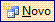

O último passo antes de chegarmos a impressão do Termo de Autenticação é implementar o relatório.
Assumimos prontos os seguintes objetos, com dados nas tabelas já plotados:
Tabela: Contribuinte
Tabela: Ecf
Tabela: ArquivoAutenticado
EntradaDadosContribuinte_Formulario
EntradaDadosEcf_Formulario
EntradaDadosEcfPorContribuinte_Formulario
EntradaDadosEcfPorContruinte_Subformulario
Necessário também será o arquivo em formato MS Word, com o Termo de Leitura.doc (Termo de Leitura e Cópia de Dados Gravados em Ecf) , conforme ilustração:
Abra-o no Ms Word;
No menu e mantenha o objeto na área de transferência.
Vamos aos passos para implementar, no Ms Access, o relatório do Termo de Autenticação:
Na aba Relatórios clique no botão novo  e , no , escolha a consulta e clique ;
![[Cuidado]](images/caution.gif)
Cuidado Assumimos que há uma impressora configurada; se não houver, proceda antes com a configuração.
O MS Access apresenta a estrutura do relatório, dividido em três seções e os campos disponíveis para inserir controles nessa estrutura;
Arraste as divisões de modo a aparecer somente a parte Detalhes, conforme ilustrado abaixo:
Clique dentro da secção Detalhes e com o arquivo Termo de Leitura.doc na área de transferência, cole-o nessa região (CRTL + V); confirme o formato correto na figura imediata:
Agora da janela Lista de Campos (caso a janela não esteja visível clique no botão lista de campos do menu principal para ativá-la), arraste os controles e os posicione no local adequado - tenha paciência; veja ilustração abaixo:
Quando o MS Access solicitar nome, salve o relatório como TermoLeituraCopiaDadosGravadosEmEcf ;
Como configuração final, clique no botão ferramentas no menu principal, para exibir a caixa de ferramentas;
Pressione o botão caixa de texto ;
Desenhe um retângulo abaixo da região do NÚMERO DO TERMO (ver figura abaixo); seleciona a caixa de texto.
Pressione o botão propriedades no menu principal e configure os campos conforme figura seguinte:
Pronto, o termo terá o seu número gerado automaticamente ; terminamos e agora o Termo de Autenticação esta pronto para impressão.